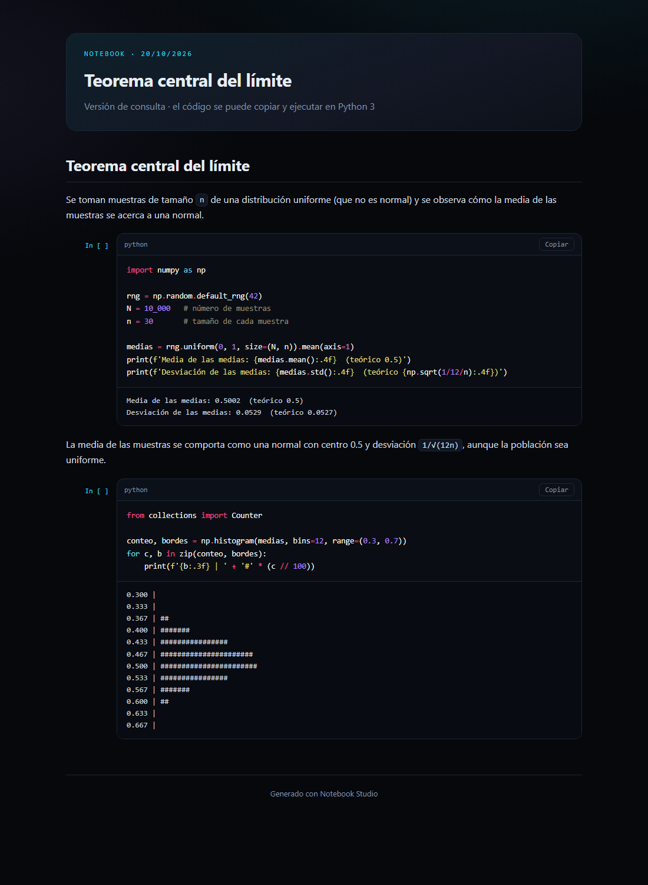
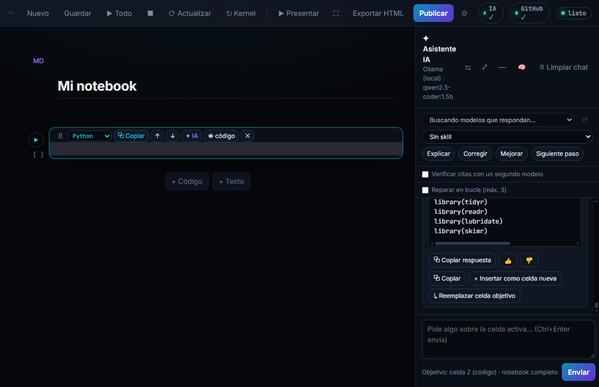

Lo que hace
Kernel real
Ejecuta Python y R con sus propios kernels de Jupyter. Las variables de cada lenguaje son independientes.
Asistente de IA
Pregunta sobre la celda activa, corrige errores en bucle y inserta el código en el notebook con un clic.
IA local con Ollama
Instala modelos pequeños que corren en tu PC, sin enviar tus datos a internet. La app recomienda los que caben en tu equipo.
Widgets y gráficas
Controles interactivos de ipywidgets y visores 3D (py3Dmol) dentro del notebook.
Publicación en HTML
Exporta o publica el notebook como una página para alumnos, con código oculto opcional y QR.
Investigación
Búsqueda en Crossref, OpenAlex, PubMed, arXiv y más, con citas y verificación de DOI.
Ejemplo en vivo
Este código se ejecuta en tu navegador con Pyodide (Python en WebAssembly). La primera vez tarda unos segundos mientras carga NumPy. Puedes editarlo.
La salida aparecerá aquí.
Capturas


Instalación
- Descarga
NotebookStudio-Setup-1.0.0.exedesde Releases. - Ejecútalo. No necesitas instalar Python: la app trae su propio intérprete.
- Opcional: marca Ollama para IA local y R para notebooks en R. Ambos son opcionales.
- Abre Notebook Studio desde el escritorio y agrega tu clave de IA en Ajustes (si no usas IA local).
Windows puede mostrar una advertencia de SmartScreen porque el instalador aún no está firmado con un certificado de código.